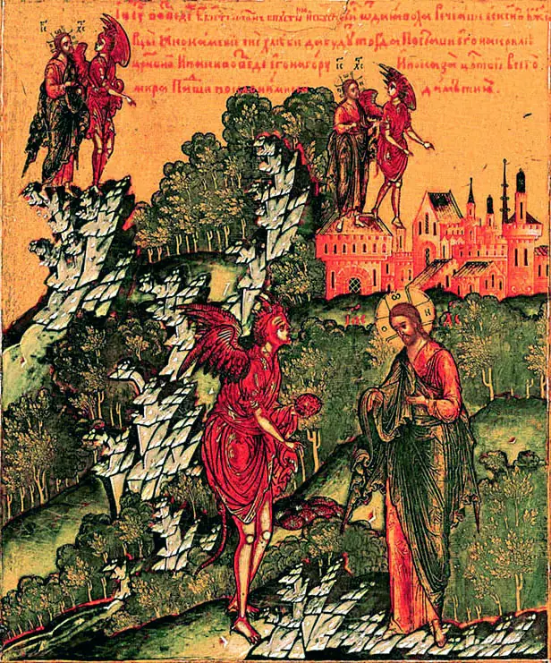

01 Зачем поститься?

Сам Христос постился сорок дней в пустыне и сказал о Своих учениках: «Придут дни, когда отнимется у них жених, и тогда будут поститься» (Мф. 9:15). Со времён апостолов Церковь постится.
Пост — не наказание и не диета. Это путь к свободе сердца: учась говорить «нет» пище, мы учимся говорить «нет» страстям; немного лишая себя, становимся внимательнее к Богу и к людям. Пост всегда соединяется с молитвой и милостыней.
Также, когда поститесь, не будьте унылы, как лицемеры. […] А ты, когда постишься, помажь голову твою и умой лице твое, чтобы явиться постящимся не пред людьми, но пред Отцом твоим, Который втайне.Мф. 6:16–18